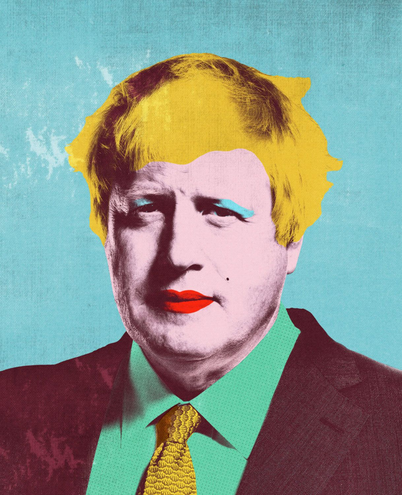

Michelle Thompson
Michelle Thompson, laureata alla RCA, è un'artista con sede nel Regno Unito che negli
ultimi ventitré anni ha creato lavori per Royal Mail, BBC, Reebok, Penguin Books, The
Guardian, oltre ad essere stata descritta in numerosi libri di illustrazione. In breve, si è
costruita un nome come illustratrice di riferimento per i lavori di collage editoriale.
Michelle crea i suoi pezzi con carte stratificate a mano e dipinge prima di modificarli
digitalmente. I clienti tornano da lei più e più volte per la sua capacità di trasmettere
argomenti pesanti e oscuri con una leggerezza e un'accessibilità rare da trovare.
